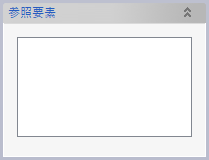

部品コンポーネントの作成
複数の要素をまとめてひとつの部品コンポーネントという要素にします。部品コンポーネントは、ひとつのかたまりとして、マニピュレーターを使って移動したり、拘束を付加したりして位置決めができます。
操作方法
部品コンポーネントとしてひとまとめにしたい要素を選択し、部品コンポーネントの名前を指定して、OKをクリックします。
パラメーター
- 名称

- 作成する部品コンポーネント要素の名前を指定します。
- 構成要素

部品コンポーネントに含める要素を選択します。OKをクリックすると、このリストで選択された要素が直接的または間接的に依存している要素もすべて部品コンポーネントの構成要素になります。
- 参照要素

構成要素が依存する要素のうち、部品コンポーネントに含めたくない要素を選択します。